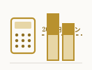

金沢移住で保育園は入りやすい？3年目が実感した入園の実態と確認ポイント
金沢移住3年目、保育園の入園申込みで待機はほぼなかった。月18,000円の保育料内訳と、入りやすさを左右した3つの確認ポイントを公開する。

移住・お金とFIRE・仕事やブログ運営・金沢での暮らし。自由とつながりを大切にする、 等身大のFIRE生活を実体験をもとに記録していきます。
FIRE SIMULATOR / 無料
都内在住と地方移住、FIRE到達年数の差を試算する
家賃・生活費・教育費・車の有無を入力するだけ。当ブログの実データを初期値に、あなたの状況で比較できます。
該当する記事が見つかりませんでした。
金沢移住3年目、保育園の入園申込みで待機はほぼなかった。月18,000円の保育料内訳と、入りやすさを左右した3つの確認ポイントを公開する。
オルカンとS&P500+NASDAQ100、資産5,800万円台の地方移住3年目はどちらを選んだか。米国比率80%と新興国株20%、配分の判断基準を公開する。
世帯年収1,650万円、NISA年間360万円・iDeCo月2万円台の非課税枠、地方移住しFIREを目指す会社員はどちらを優先すべきか判断基準を整理する。
金沢移住3年目、食費は月7万円（東京時代は9万円）。近江町市場とスーパーの使い分け基準を、フルリモートワーカーならではの視点で公開する。

会社員が複業をすると確定申告が必要になるのは所得20万円から。複業歴1年、月4.2万円の内訳を年間換算し、収入と所得の違い・申告の流れを整理する。
金沢移住3年目、車1台の年間維持費は実額24万円。任意保険・自動車税・車検・ガソリン代まで6項目の内訳とカーシェア比較を公開する。
地方移住3年目、転出届・転入届・住所変更など6つの手続きを実働2時間30分で完了。フルリモートワークだからこそ取れた進め方の順番と優先順位を公開する。
地方移住3年目、生命保険・医療保険の見直しで保険料は月12,000円から6,000円に半減。医療保障・死亡保障の比較基準を実額で公開する。
地方移住×フルリモート3年目、複業3種の初期費用は実質0円。収益化までは即日〜3ヶ月、月間収入と伸びしろを実額で比較する。
金沢移住3年目、除雪・雪国対策の年間ランニングコストは実額67,500円。灯油代やタイヤ交換費まで内訳を数字で公開する。

世帯年収1,650万円、ふるさと納税の年間寄付上限は約28万円。金沢移住3年目の実際の寄付先・返礼品・還元率を数字で公開する。

地方移住3年、世帯資産は4,200万円から5,800万円台まで増えた。インデックス投資の積立実績とFIRE目標6,000万円までの推移を数字で公開する。

金沢移住×フルリモート歴3年、複業歴1年で月4.2万円の副収入。地方移住者ならではの複業の始め方と時間配分を実額で公開する。

未就学児を育てる我が家の金沢での子育て月間支出は約4万円。東京時代との比較、保育料や医療費助成の自治体差を数字で整理する。

半導体株急落・日経急落のたびに考える、積立を止めない理由。資産5,800万円台・S&P500 50%の実際の判断基準を記録する。

地方移住3年、FP相談を使わずインデックス投資（S&P500 50%・NASDAQ100 30%・新興国株20%）を自分で判断してきた理由と根拠を整理する。

在宅環境に自己負担で投資した合計19.6万円の内訳を公開。チェア8.8万円・昇降デスク4.2万円など、費用対効果を数字で検証する。

東京から金沢への移住でかかった費用は合計50万円。引っ越し業者15万円、初期費用20万円、雪国装備費7万円など、実額を項目別に公開する。

楽天証券をメイン、SBI証券をサブとして併用している理由を、地方移住・リモートワーカーならではの視点から具体的に整理する。

移住して3年、時間をかけて地元の人とのつながりを作るために実際にやったことをまとめる。

移住3年、3回の冬を経験して分かった金沢の雪国生活のリアルと、年々効率化してきた冬支度をまとめる。

金沢移住3年目の生活費は月いくら？実額30万円の内訳（住居費8万円・食費7万円）と、東京時代43万円との差を公開する。

ブログ開設1ヶ月の実際の数字と、そこから見えてきた課題・次の一手を記録する。

IT業界でフルリモートを実現するために実際に取り組んだ、リモートワークの仕事の探し方・続け方についてまとめる。

移住を機に見直した固定費の内訳と、実際にどこまで削れたのかを数字ベースでまとめる。

S&P500 50%・NASDAQ100 30%・新興国株20%で組む、地方移住後のインデックス積立ポートフォリオを公開する。

金沢の家賃相場はいくら？東京20万円の物件から移住し、実際に契約した家賃8万円の内訳とエリア別相場、物件選びで重視した3条件を公開する。

金沢移住を決めた3つの理由と、移住前の下見で実際にやってよかったことをまとめる。

資産形成だけでは辿り着けない。何歳でどれくらいの裁量を持ちたいかを先に決め、そこから今の働き方・転職の軸を逆算して考えた。